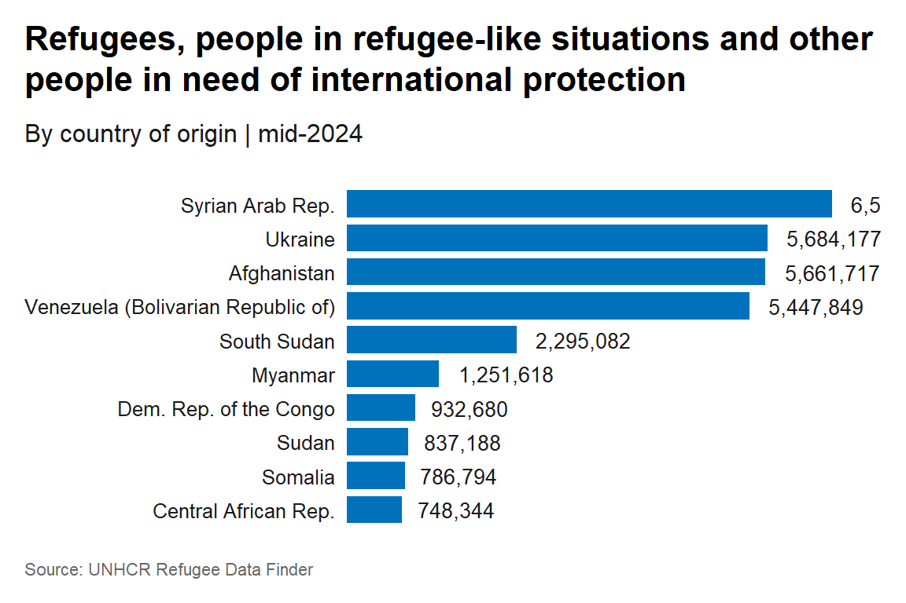

refugees is an R package designed to facilitate access to the United Nations High Commissioner for Refugees (UNHCR) Refugee Data Finder. It provides an easy-to-use interface to the database, which covers forcibly displaced populations, including refugees, asylum-seekers, internally displaced people, stateless people, and others over a span of more than 70 years.
This package provides data from three major sources:
Data from UNHCR’s annual statistical activities dating back to 1951.
Data from the United Nations Relief and Works Agency for Palestine Refugees in the Near East (UNRWA), specifically for registered Palestine refugees under UNRWA’s mandate.
Data from the Internal Displacement Monitoring Centre (IDMC) on people displaced within their country due to conflict or violence.
Datasets
The refugees package includes eight datasets:
population: Data on forcibly displaced and stateless persons by year, including refugees, asylum-seekers, returned refugees, internally displaced persons (IDPs), and stateless persons.idmc: Data from the Internal Displacement Monitoring Centre on the total number of IDPs due to conflict and violence.asylum_applications: Data on asylum applications including procedure type and application type.asylum_decisions: Data on asylum decisions, including recognised, rejected, and otherwise closed claims.demographics: Demographic and sub-national data, where available, including age and sex disaggregation.solutions: Data on durable solutions for refugees and IDPs.unrwa: Data on registered Palestine refugees under UNRWA’s mandate.flows: Numbers of the people forced to flee during each of the years since 1962.
Please check the individual dataset description for more details on the content of each dataset.
Installation
Install either from CRAN with:
install.packages("refugees")Or retrieve the development version from Github using the pak package:
pak::pkg_install("PopulationStatistics/refugees")Usage
Here are some examples of how you can use the refugees`` package. Thepopulation` dataset can be used to easily get data on forced displacement or statelessness.
library(refugees)
library(dplyr)
glimpse(refugees::population)
#> Rows: 126,402
#> Columns: 16
#> $ year <dbl> 1951, 1951, 1951, 1951, 1951, 1951, 1951, 1951, 1951…
#> $ coo_name <chr> "Unknown", "Unknown", "Unknown", "Unknown", "Unknown…
#> $ coo <chr> "UKN", "UKN", "UKN", "UKN", "UKN", "UKN", "UKN", "UK…
#> $ coo_iso <chr> "UNK", "UNK", "UNK", "UNK", "UNK", "UNK", "UNK", "UN…
#> $ coa_name <chr> "Australia", "Austria", "Belgium", "Canada", "Denmar…
#> $ coa <chr> "AUL", "AUS", "BEL", "CAN", "DEN", "FRA", "GBR", "GF…
#> $ coa_iso <chr> "AUS", "AUT", "BEL", "CAN", "DNK", "FRA", "GBR", "DE…
#> $ refugees <dbl> 180000, 282000, 55000, 168511, 2000, 290000, 208000,…
#> $ asylum_seekers <dbl> 0, 0, 0, 0, 0, 0, 0, 0, 0, 0, 0, 0, 0, 0, 0, 0, 0, 0…
#> $ returned_refugees <dbl> 0, 0, 0, 0, 0, 0, 0, 0, 0, 0, 0, 0, 0, 0, 0, 0, 0, 0…
#> $ idps <dbl> 0, 0, 0, 0, 0, 0, 0, 0, 0, 0, 0, 0, 0, 0, 0, 0, 0, 0…
#> $ returned_idps <dbl> 0, 0, 0, 0, 0, 0, 0, 0, 0, 0, 0, 0, 0, 0, 0, 0, 0, 0…
#> $ stateless <dbl> 0, 0, 0, 0, 0, 0, 0, 0, 0, 0, 0, 0, 0, 0, 0, 0, 0, 0…
#> $ ooc <dbl> 0, 0, 0, 0, 0, 0, 0, 0, 0, 0, 0, 0, 0, 0, 0, 0, 0, 0…
#> $ oip <dbl> NA, NA, NA, NA, NA, NA, NA, NA, NA, NA, NA, NA, NA, …
#> $ hst <dbl> 0, 0, 0, 0, 0, 0, 0, 0, 0, 0, 0, 0, 0, 0, 0, 0, 0, 0…The population dataset can be used to get the 10 countries of origin with highest number of refugees, people in refugee-like situations including people in need of international protection in 2022.
ref_coo_10 <- refugees::population |>
filter(year == 2022) |>
summarise(refugees = sum(refugees, na.rm = TRUE) + sum(oip, na.rm = TRUE),
.by = coo_name) |>
slice_max(order_by = refugees, n = 10)
ref_coo_10
#> # A tibble: 10 × 2
#> coo_name refugees
#> <chr> <dbl>
#> 1 Syrian Arab Rep. 6559736
#> 2 Ukraine 5684177
#> 3 Afghanistan 5661717
#> 4 Venezuela (Bolivarian Republic of) 5447849
#> 5 South Sudan 2295082
#> 6 Myanmar 1251618
#> 7 Dem. Rep. of the Congo 932680
#> 8 Sudan 837188
#> 9 Somalia 786794
#> 10 Central African Rep. 748344We can use ggplot2 and the unhcrthemes to visualize our data following the UNHCR data visualization guidelines.
library(ggplot2)
library(unhcrthemes)
ref_coo_10 |>
ggplot(aes(refugees, reorder(coo_name, refugees))) +
geom_col(fill = unhcr_pal(n = 1, "pal_blue"),
width = 0.8) +
geom_text(aes(label = scales::label_comma()(refugees)),
hjust = -0.2) +
scale_x_continuous(expand = expansion(mult = c(0, 0.1))) +
labs(title = "Refugees, people in refugee-like situations and other people in need of international protection",
subtitle = "By country of origin | mid-2024",
caption = "Source: UNHCR Refugee Data Finder") +
theme_unhcr(font_size = 12,
grid = FALSE,
axis = FALSE,
axis_title = FALSE,
axis_text = "y")
For more examples, see How to use UNHCR’s refugees R package.
License
This package is released under the Creative Commons Attribution 4.0 International Public License.